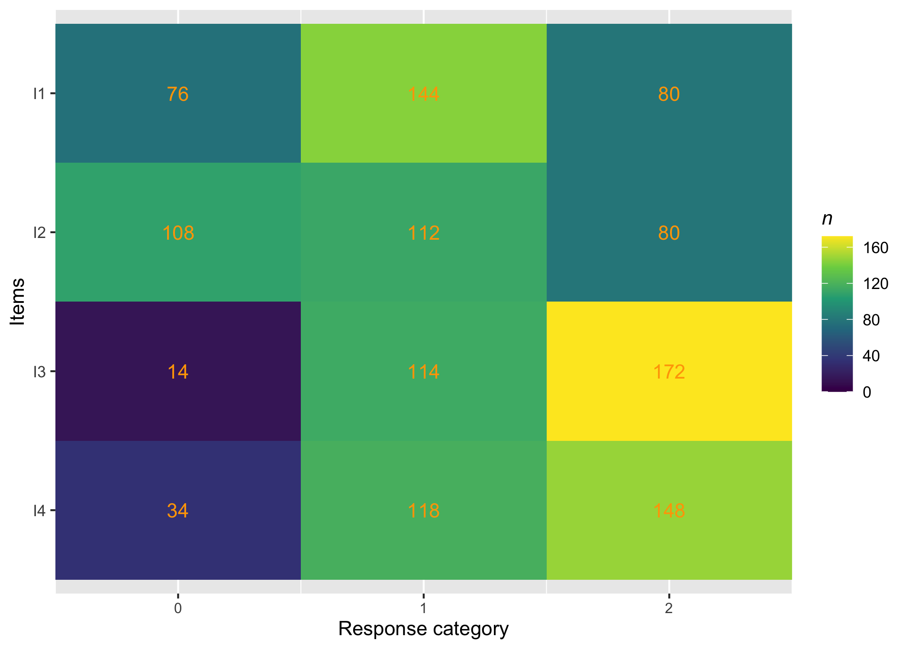
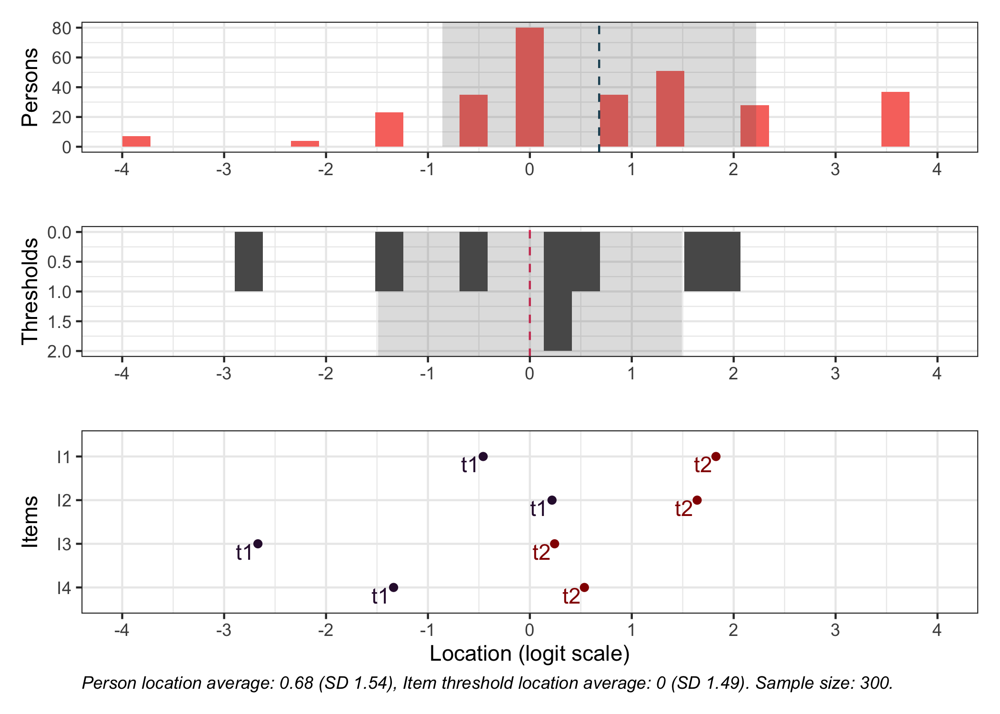
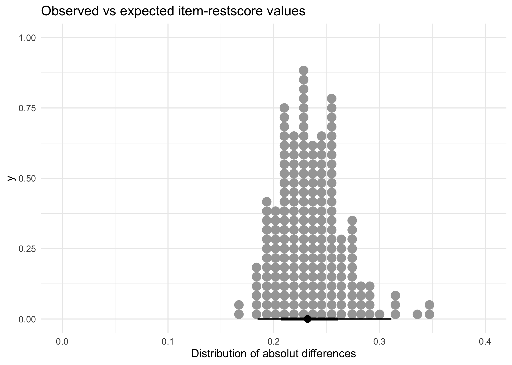
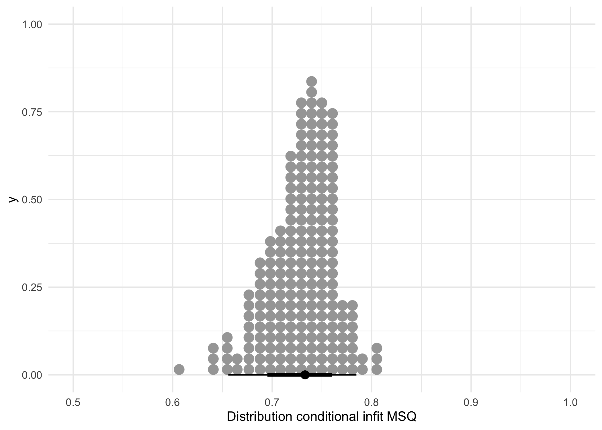
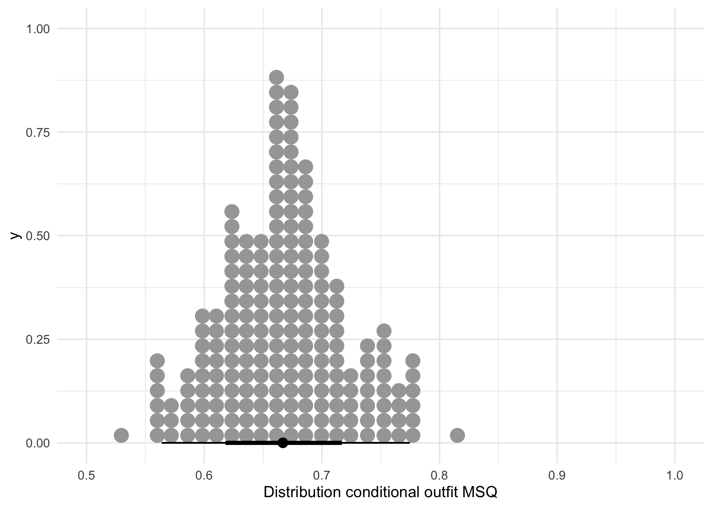
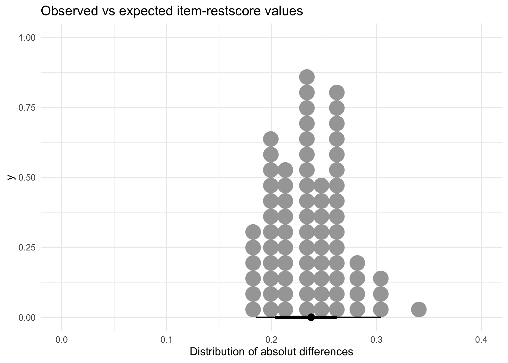
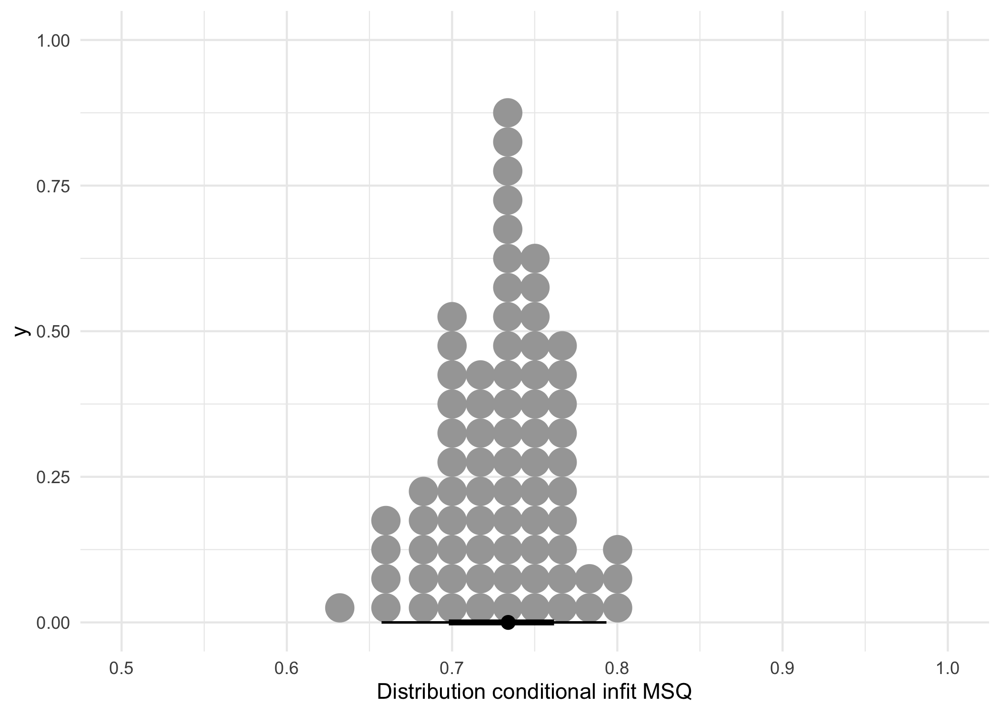
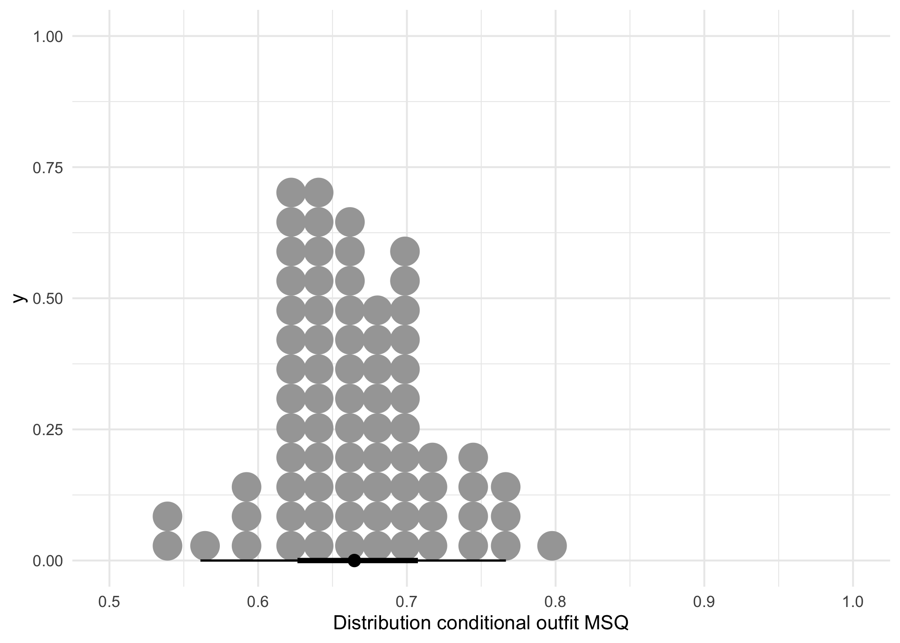
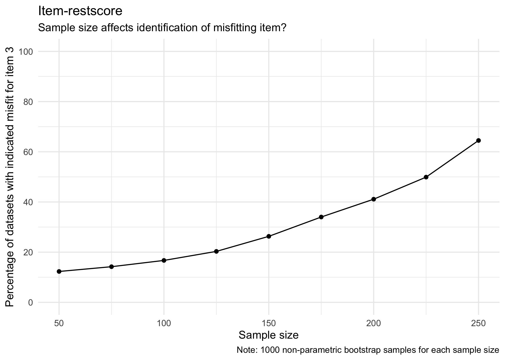
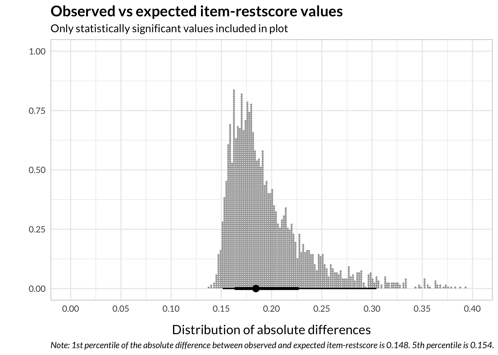

Rasch item-restscore and sample size
Magnus Johansson ![]()
1 Background
It seems to me that the iarm::item_restscore() function is sensitive to sample size, which is not surprising as it provides a p-value. The questions of interest to me are:
- how important is that p-value in itself?
- what is the connection between the difference between observed and expected score and the p-value? (magnitude and significance, if you will)
- how is item-restscore related to the bootstrapped p-values from the
iarm::boot_fit()function (which calculates conditional item fit values)? - how is simulation based cutoff values for conditional infit/outfit related to the two above?
I will use the Rasch Partial Credit Model (PCM) for some explorations of this topic.
1.1 Example
First, we’ll review results from the dataset pcmdat2 included in the eRm package.
Code
RItileplot(pcmdat2)
Code
RItargeting(pcmdat2)
300 respondents, 4 items with 4 response categories each.
Code
testfit <- function(data, boot = 100, sfit = 500) {
i1 <- item_restscore(PCM(data))
i1 <- as.data.frame(i1)
i2 <- data.frame("observed" = as.numeric(i1[[1]][1:ncol(data),1]),
"expected" = as.numeric(i1[[1]][1:ncol(data),2]),
"se" = as.numeric(i1[[1]][1:ncol(data),3]),
"p.value" = as.numeric(i1[[1]][1:ncol(data),4]),
"p.adj.BH" = as.numeric(i1[[1]][1:ncol(data),5])
) %>%
mutate(diff_abs = abs(expected - observed),
diff = expected - observed)
ifit <- out_infit(PCM(data))
bfit <- boot_fit(PCM(data),boot)
sfit <- RIgetfit(data,sfit,8)
out <- list("item_restscore" = i2,
"out_infit" = ifit,
"boot_fit" = bfit,
"sfit" = sfit)
return(out)
}
test1 <- testfit(pcmdat2)
Number of bootstrap samples: 10, 20, 30, 40, 50, 60, 70, 80, 90, 100,
Code
test1$item_restscore observed expected se p.value p.adj.BH diff_abs diff
1 0.4729 0.5243 0.0530 0.3329 0.4439 0.0514 0.0514
2 0.4414 0.5244 0.0593 0.1620 0.3240 0.0830 0.0830
3 0.6427 0.4849 0.0541 0.0035 0.0140 0.1578 -0.1578
4 0.5351 0.4956 0.0599 0.5098 0.5098 0.0395 -0.0395Code
test1$boot_fit
Outfit pvalue padj sig Infit pvalue padj sig
I1 1.069 0.36 0.48 1.08 0.136 0.271
I2 1.084 0.186 0.298 1.155 0 0 ***
I3 0.802 0.019 0.05 . 0.828 0 0 ***
I4 1.024 0.814 0.93 1.007 0.955 0.955
P value adjustment: BHCode
RIitemfit(pcmdat2,test1$sfit)| Item | InfitMSQ | Infit thresholds | OutfitMSQ | Outfit thresholds | Infit diff | Outfit diff |
|---|---|---|---|---|---|---|
| I1 | 1.08 | [0.861, 1.156] | 1.069 | [0.839, 1.212] | no misfit | no misfit |
| I2 | 1.155 | [0.839, 1.202] | 1.084 | [0.813, 1.32] | no misfit | no misfit |
| I3 | 0.828 | [0.861, 1.157] | 0.802 | [0.812, 1.226] | 0.033 | 0.01 |
| I4 | 1.007 | [0.836, 1.183] | 1.024 | [0.814, 1.23] | no misfit | no misfit |
| Note: | ||||||
|
MSQ values based on conditional calculations (n = 300 complete cases). Simulation based thresholds from 500 simulated datasets. |
We have a significant item-restscore deviation for item 3 (higher than expected), and the low infit/outfit is significant when using bootstrapped p-values (100 iterations). The simulation based cutoff values for infit/outfit agree (500 iterations).
Also, note that item 3 has the worst targeting (see ?@fig-targeting1)
1.2 Reduced sample
Our sample size is 300. What happens if we reduce that to 100?
Number of bootstrap samples: 10, 20, 30, 40, 50, 60, 70, 80, 90, 100,
Code
test2$item_restscore observed expected se p.value p.adj.BH diff_abs diff
1 0.4805 0.4989 0.0915 0.8407 0.9772 0.0184 0.0184
2 0.4541 0.5061 0.1016 0.6084 0.9772 0.0520 0.0520
3 0.6168 0.4551 0.1117 0.1477 0.5909 0.1617 -0.1617
4 0.4763 0.4730 0.1150 0.9772 0.9772 0.0033 -0.0033Code
test2$boot_fit
Outfit pvalue padj sig Infit pvalue padj sig
I1 1.039 0.65 0.698 1.024 0.698 0.698
I2 1.042 0.658 0.698 1.071 0.675 0.698
I3 0.911 0.404 0.698 0.869 0.12 0.698
I4 1.039 0.66 0.698 1.045 0.554 0.698
P value adjustment: BHCode
RIitemfit(d100,test2$sfit)| Item | InfitMSQ | Infit thresholds | OutfitMSQ | Outfit thresholds | Infit diff | Outfit diff |
|---|---|---|---|---|---|---|
| I1 | 1.024 | [0.744, 1.288] | 1.039 | [0.726, 1.609] | no misfit | no misfit |
| I2 | 1.071 | [0.742, 1.305] | 1.042 | [0.728, 1.647] | no misfit | no misfit |
| I3 | 0.869 | [0.763, 1.269] | 0.911 | [0.67, 1.456] | no misfit | no misfit |
| I4 | 1.045 | [0.76, 1.31] | 1.039 | [0.692, 1.439] | no misfit | no misfit |
| Note: | ||||||
|
MSQ values based on conditional calculations (n = 100 complete cases). Simulation based thresholds from 486 simulated datasets. |
Everything now looks ok. This could of course be due to random sampling. Let’s use the sample size of 100 and do 1000 iterations of random samples to see how many show misfit for item 3. We should really use a simulated dataset with induced (known) misfit, but let’s do that later.
2 Non-parametric bootstrapping
First, we build a function to run multiple samples.
Code
testfit2 <- function(dat, boot = 100, sfit = 500, iterations = 1:10) {
fit <- list()
fit <- foreach(iterations) %do% {
data <- dat[sample(1:nrow(dat), 100), ]
i1 <- item_restscore(PCM(data))
i1 <- as.data.frame(i1)
i2 <- data.frame("observed" = as.numeric(i1[[1]][1:ncol(data),1]),
"expected" = as.numeric(i1[[1]][1:ncol(data),2]),
"se" = as.numeric(i1[[1]][1:ncol(data),3]),
"p.value" = as.numeric(i1[[1]][1:ncol(data),4]),
"p.adj.BH" = as.numeric(i1[[1]][1:ncol(data),5])
) %>%
mutate(diff_abs = abs(expected - observed),
diff = expected - observed,
ir_padj = ifelse(p.adj.BH < .05, "sign. misfit","no misfit")) %>%
select(ir_padj, diff, diff_abs) %>%
mutate(item = 1:ncol(data))
#ifit <- out_infit(PCM(data))
bfit <- boot_fit(PCM(data),boot)
bfit <- bfit[[1]] %>%
as.data.frame() %>%
mutate(bfit_sig = case_when(out.pkorr < .05 ~ "sign. outfit",
in.pkorr < .05 ~ "sign. infit",
out.pkorr < .05 & in.pkorr < .05 ~ "sign. inoutfit",
.default = "no misfit")) %>%
mutate(item = 1:ncol(data)) %>%
select(item,bfit_sig,Outfit,Infit)
simfit <- RIgetfit(data,sfit,8)
rfit <- RIitemfit(data,simfit,output = "dataframe") %>%
select(infit_diff,outfit_diff) %>%
mutate(item = 1:ncol(data))
list("item_restscore" = i2,
#"out_infit" = ifit,
"boot_fit" = bfit,
"rfit" = rfit)
}
return(fit)
}Then we run it for 1000 iterations.
Code
#test3 <- testfit2(pcmdat2, iterations = 1:1000)
#saveRDS(test3,"irscore.Rdata")
test3 <- readRDS("irscore.Rdata")2.1 Results
Join results to a dataframe.
Code
iterations = 1:1000
result_irscore <- map_dfr(iterations, ~ bind_rows(test3[[.x]]$item_restscore) %>%
add_column(iteration = .x))
result_bfit <- map_dfr(iterations, ~ bind_rows(test3[[.x]]$boot_fit) %>%
add_column(iteration = .x))
result_sfit <- map_dfr(iterations, ~ bind_rows(test3[[.x]]$rfit) %>%
add_column(iteration = .x))
results <- left_join(result_irscore,result_bfit, by = c("iteration","item"))
results <- left_join(results, result_sfit, by = c("iteration","item"))
head(results, 24) ir_padj diff diff_abs item iteration bfit_sig Outfit Infit
1 no misfit 0.0727 0.0727 1 1 no misfit 1.0659711 1.0993426
2 no misfit 0.0186 0.0186 2 1 no misfit 0.9658042 1.0194994
3 no misfit -0.0587 0.0587 3 1 no misfit 1.0207190 0.9454184
4 no misfit -0.0941 0.0941 4 1 no misfit 1.0042747 0.9572694
5 no misfit -0.0027 0.0027 1 2 no misfit 0.9899937 0.9862542
6 no misfit 0.0375 0.0375 2 2 no misfit 1.0107473 1.0574265
7 no misfit -0.1745 0.1745 3 2 sign. infit 0.7756829 0.7640317
8 no misfit 0.0772 0.0772 4 2 sign. outfit 1.2900957 1.2411078
9 no misfit 0.0340 0.0340 1 3 no misfit 1.0615916 1.0620552
10 no misfit 0.1110 0.1110 2 3 no misfit 1.1499652 1.1798024
11 no misfit -0.2230 0.2230 3 3 no misfit 0.7856128 0.8097686
12 no misfit -0.0700 0.0700 4 3 no misfit 1.0055846 0.9904388
13 no misfit 0.1459 0.1459 1 4 no misfit 1.2733994 1.2708954
14 no misfit 0.0486 0.0486 2 4 no misfit 1.0097530 1.0603228
15 no misfit -0.1482 0.1482 3 4 no misfit 0.8384259 0.8156593
16 no misfit -0.0927 0.0927 4 4 no misfit 0.8229410 0.8741012
17 no misfit 0.0175 0.0175 1 5 no misfit 1.0121368 1.0234842
18 no misfit 0.0861 0.0861 2 5 no misfit 1.1212221 1.1665047
19 no misfit -0.1118 0.1118 3 5 no misfit 0.8405235 0.8587897
20 no misfit -0.0295 0.0295 4 5 no misfit 1.0095068 0.9915725
21 no misfit 0.0320 0.0320 1 6 no misfit 1.0593372 1.0527971
22 no misfit 0.1783 0.1783 2 6 sign. infit 1.2267309 1.3885530
23 no misfit -0.1901 0.1901 3 6 no misfit 0.8225946 0.8096652
24 no misfit -0.1424 0.1424 4 6 no misfit 0.8847511 0.8817594
infit_diff outfit_diff
1 no misfit no misfit
2 no misfit no misfit
3 no misfit no misfit
4 no misfit no misfit
5 no misfit no misfit
6 no misfit no misfit
7 no misfit no misfit
8 no misfit no misfit
9 no misfit no misfit
10 no misfit no misfit
11 no misfit no misfit
12 no misfit no misfit
13 0.013 no misfit
14 no misfit no misfit
15 no misfit no misfit
16 no misfit no misfit
17 no misfit no misfit
18 no misfit no misfit
19 no misfit no misfit
20 no misfit no misfit
21 no misfit no misfit
22 0.083 no misfit
23 no misfit no misfit
24 no misfit no misfitOk, we have some results to summarise. First, we filter on item-restscore misfit and look at the first 25 rows.
ir_padj diff diff_abs item iteration bfit_sig Outfit
1 sign. misfit -0.1797 0.1797 3 10 sign. outfit 0.6402285
2 sign. misfit -0.2376 0.2376 3 18 no misfit 0.7747958
3 sign. misfit -0.2552 0.2552 3 20 sign. outfit 0.6827816
4 sign. misfit -0.2531 0.2531 3 31 sign. outfit 0.6621439
5 sign. misfit -0.2729 0.2729 3 38 sign. outfit 0.6762267
6 sign. misfit -0.2129 0.2129 4 41 sign. outfit 0.6905030
7 sign. misfit -0.2334 0.2334 3 49 sign. outfit 0.6526281
8 sign. misfit -0.1905 0.1905 3 56 sign. outfit 0.6704844
9 sign. misfit -0.2583 0.2583 3 59 sign. outfit 0.7076849
10 sign. misfit -0.2280 0.2280 3 64 sign. outfit 0.6629790
11 sign. misfit -0.2323 0.2323 3 70 sign. infit 0.7532934
12 sign. misfit -0.2511 0.2511 3 71 sign. outfit 0.7174040
13 sign. misfit -0.2065 0.2065 3 76 sign. outfit 0.6904129
14 sign. misfit -0.2055 0.2055 3 84 sign. infit 0.7523724
15 sign. misfit -0.2479 0.2479 3 87 no misfit 0.6721512
16 sign. misfit -0.2206 0.2206 3 89 sign. outfit 0.6917995
17 sign. misfit -0.2220 0.2220 3 90 no misfit 0.6786376
18 sign. misfit -0.2364 0.2364 3 97 sign. outfit 0.5883898
19 sign. misfit -0.2585 0.2585 3 101 sign. outfit 0.6865158
20 sign. misfit -0.2799 0.2799 3 103 sign. outfit 0.6043981
21 sign. misfit -0.2521 0.2521 3 108 sign. outfit 0.7258624
22 sign. misfit -0.2284 0.2284 3 109 sign. outfit 0.6607257
23 sign. misfit -0.2850 0.2850 3 113 sign. outfit 0.6595454
24 sign. misfit -0.2197 0.2197 3 123 sign. outfit 0.6570153
25 sign. misfit -0.2744 0.2744 3 124 sign. outfit 0.6481838
Infit infit_diff outfit_diff
1 0.7305199 no misfit no misfit
2 0.7693903 0.004 no misfit
3 0.7218550 0.043 0.032
4 0.7247758 0.028 0.022
5 0.7155371 0.015 no misfit
6 0.7658634 no misfit no misfit
7 0.7104056 0.045 no misfit
8 0.7227110 0.022 no misfit
9 0.7764644 0.01 no misfit
10 0.7339133 0.038 0.013
11 0.7558214 0.013 no misfit
12 0.7302366 0.026 no misfit
13 0.7466734 0.007 no misfit
14 0.7191440 0.03 no misfit
15 0.7524506 0.001 no misfit
16 0.7353687 0.057 no misfit
17 0.7417101 no misfit no misfit
18 0.6870658 0.04 0.033
19 0.7523964 0.005 0.014
20 0.6582644 0.071 0.074
21 0.7784688 no misfit no misfit
22 0.7416230 0.016 0.028
23 0.6928638 0.067 no misfit
24 0.7170398 0.011 no misfit
25 0.7348365 0.038 no misfit item n
1 3 200
2 4 1Code
ir <- results %>%
filter(ir_padj == "sign. misfit") %>%
nrow()
bf <- results %>%
filter(ir_padj == "sign. misfit") %>%
filter(bfit_sig == "no misfit") %>%
nrow()
bfout <- results %>%
filter(ir_padj == "sign. misfit") %>%
filter(bfit_sig == "sign. outfit") %>%
nrow()
simfitin <- results %>%
filter(ir_padj == "sign. misfit") %>%
filter(!infit_diff == "no misfit") %>%
nrow()
simfitout <- results %>%
filter(ir_padj == "sign. misfit") %>%
filter(!outfit_diff == "no misfit") %>%
nrow()
simfitboth <- results %>%
filter(ir_padj == "sign. misfit") %>%
filter(!outfit_diff == "no misfit" | !infit_diff == "no misfit") %>%
nrow()Item 3 misfit almost exclusively, except for one instance of item 4. Item-restscore shows misfit in 201 (out of 1000) datasets, 20.1%.
Bootstrapped (using 100 bootstraps per dataset) item infit/outfit p-values also indicate significant misfit amongst the datasets identified by item-restscore, and agrees with item-restscore all but 24 cases.
Simulation based cutoffs using 500 iterations (per dataset) indicate less misfit in this sample of item-restscore misfits. 149 out of 201, of which 142 were flagged for infit, and 70 for outfit.
2.1.1 Item-restscore
Let’s review the observed/expected differences.
Code
| Median | MAD | Mean | SD | Max | Min |
|---|---|---|---|---|---|
| 0.232 | 0.031 | 0.235 | 0.031 | 0.348 | 0.167 |
Code
results %>%
filter(ir_padj == "sign. misfit") %>%
ggplot() +
stat_dotsinterval(aes(x = diff_abs)) +
scale_x_continuous('Distribution of absolut differences', limits = c(0,0.4)) +
theme_minimal() +
labs(title = "Observed vs expected item-restscore values")
The results above were filtered on only item-restscore, so there may be other results for the other methods.
2.1.2 Bootfit
Code
| item | n |
|---|---|
| 1 | 24 |
| 2 | 9 |
| 3 | 269 |
| 4 | 35 |
Code
| item | n |
|---|---|
| 1 | 21 |
| 2 | 100 |
| 3 | 56 |
| 4 | 1 |
Code
| item | n |
|---|---|
| 1 | 45 |
| 2 | 109 |
| 3 | 325 |
| 4 | 36 |
337 datasets with significant outfit and 178 with significant infit.
2.1.3 Simulation based cutoff
Code
| item | n |
|---|---|
| 3 | 75 |
| 4 | 3 |
Code
| item | n |
|---|---|
| 1 | 15 |
| 2 | 71 |
| 3 | 169 |
| 4 | 7 |
Code
| item | n |
|---|---|
| 1 | 15 |
| 2 | 71 |
| 3 | 178 |
| 4 | 9 |
78 datasets with significant outfit and 262 with significant infit, resulting in 273 with either type of misfit.
We can review the distribution of infit/outfit for misfitting items.
2.1.4 Infit
Code
| Median | MAD | Mean | SD | Max | Min |
|---|---|---|---|---|---|
| 0.733 | 0.031 | 0.729 | 0.034 | 0.807 | 0.606 |
Code
results %>%
filter(ir_padj == "sign. misfit") %>%
ggplot() +
stat_dotsinterval(aes(x = Infit)) +
scale_x_continuous('Distribution conditional infit MSQ', limits = c(0.5,1)) +
theme_minimal()
2.1.5 Outfit
Code
| Median | MAD | Mean | SD | Max | Min |
|---|---|---|---|---|---|
| 0.667 | 0.053 | 0.667 | 0.053 | 0.815 | 0.53 |
Code
results %>%
filter(ir_padj == "sign. misfit") %>%
ggplot() +
stat_dotsinterval(aes(x = Outfit)) +
scale_x_continuous('Distribution conditional outfit MSQ', limits = c(0.5,1)) +
theme_minimal()
3 Test 2
What happens if we increase the number of iterations for simulation based cutoffs? We’ve been running at 500 to shorten runtime, but could go to 1000 iteration while cutting the number of datasets down from 1000 to 500. We’ll also try using 50 bootstrap samples for bootfit() and see how that affects its p-values.
Code
#test4 <- testfit2(pcmdat2, iterations = 1:500, sfit = 1000, boot = 50)
#saveRDS(test4,"irscore500.Rdata")
test4 <- readRDS("irscore500.Rdata")3.1 Results
Join results to a dataframe.
Code
iterations = 1:500
result_irscore <- map_dfr(iterations, ~ bind_rows(test4[[.x]]$item_restscore) %>%
add_column(iteration = .x))
result_bfit <- map_dfr(iterations, ~ bind_rows(test4[[.x]]$boot_fit) %>%
add_column(iteration = .x))
result_sfit <- map_dfr(iterations, ~ bind_rows(test4[[.x]]$rfit) %>%
add_column(iteration = .x))
results <- left_join(result_irscore,result_bfit, by = c("iteration","item"))
results <- left_join(results, result_sfit, by = c("iteration","item"))
head(results, 24) ir_padj diff diff_abs item iteration bfit_sig Outfit Infit
1 no misfit 0.0278 0.0278 1 1 no misfit 1.0454139 1.0724946
2 no misfit 0.0860 0.0860 2 1 no misfit 1.0653470 1.2179965
3 no misfit -0.1556 0.1556 3 1 no misfit 0.8271545 0.8247410
4 no misfit -0.0592 0.0592 4 1 no misfit 1.0316122 1.0171284
5 no misfit 0.0264 0.0264 1 2 no misfit 1.0371496 1.0423821
6 no misfit 0.0763 0.0763 2 2 no misfit 1.0761663 1.1804809
7 no misfit -0.1992 0.1992 3 2 sign. infit 0.7431027 0.7771497
8 no misfit -0.0060 0.0060 4 2 no misfit 1.0988844 1.1447383
9 no misfit -0.0187 0.0187 1 3 no misfit 0.9555410 0.9643910
10 no misfit 0.0529 0.0529 2 3 no misfit 1.0483272 1.0789874
11 no misfit -0.2161 0.2161 3 3 sign. infit 0.8060479 0.8360092
12 no misfit 0.0570 0.0570 4 3 no misfit 1.2451834 1.1846969
13 no misfit -0.0162 0.0162 1 4 no misfit 0.9707772 0.9731070
14 no misfit 0.1582 0.1582 2 4 no misfit 1.2051081 1.2579444
15 no misfit -0.1891 0.1891 3 4 no misfit 0.8434983 0.8546639
16 no misfit -0.0680 0.0680 4 4 no misfit 1.0116630 0.9913493
17 no misfit 0.0658 0.0658 1 5 no misfit 1.0719629 1.0935663
18 no misfit 0.0971 0.0971 2 5 no misfit 1.0809464 1.1970012
19 no misfit -0.1619 0.1619 3 5 no misfit 0.7307903 0.8012734
20 no misfit -0.0592 0.0592 4 5 no misfit 1.0086764 0.9944696
21 no misfit -0.0626 0.0626 1 6 no misfit 0.9247730 0.9184895
22 no misfit 0.1088 0.1088 2 6 no misfit 1.0813182 1.1484476
23 no misfit -0.1263 0.1263 3 6 no misfit 0.9227389 0.9410586
24 no misfit -0.0176 0.0176 4 6 no misfit 1.0888125 1.0363839
infit_diff outfit_diff
1 no misfit no misfit
2 no misfit no misfit
3 no misfit no misfit
4 no misfit no misfit
5 no misfit no misfit
6 no misfit no misfit
7 no misfit no misfit
8 no misfit no misfit
9 no misfit no misfit
10 no misfit no misfit
11 no misfit no misfit
12 no misfit no misfit
13 no misfit no misfit
14 no misfit no misfit
15 no misfit no misfit
16 no misfit no misfit
17 no misfit no misfit
18 no misfit no misfit
19 no misfit no misfit
20 no misfit no misfit
21 no misfit no misfit
22 no misfit no misfit
23 no misfit no misfit
24 no misfit no misfitOk, we have some results to summarise. First, we filter on item-restscore misfit and look at the first 25 rows.
ir_padj diff diff_abs item iteration bfit_sig Outfit
1 sign. misfit -0.2633 0.2633 3 9 sign. outfit 0.6975253
2 sign. misfit -0.2529 0.2529 3 19 sign. outfit 0.7050639
3 sign. misfit -0.2867 0.2867 3 27 sign. outfit 0.5386553
4 sign. misfit -0.1996 0.1996 3 38 sign. outfit 0.5642884
5 sign. misfit -0.2330 0.2330 3 40 sign. outfit 0.6318898
6 sign. misfit -0.2387 0.2387 3 44 sign. outfit 0.6268911
7 sign. misfit -0.1951 0.1951 3 46 sign. outfit 0.6470683
8 sign. misfit -0.2359 0.2359 3 49 no misfit 0.6304596
9 sign. misfit -0.3082 0.3082 3 52 no misfit 0.7689529
10 sign. misfit -0.1964 0.1964 3 58 sign. outfit 0.6660527
11 sign. misfit -0.2999 0.2999 3 59 sign. outfit 0.6162333
12 sign. misfit -0.2393 0.2393 3 62 sign. outfit 0.6830782
13 sign. misfit -0.2269 0.2269 3 64 sign. outfit 0.7086075
14 sign. misfit -0.2317 0.2317 3 69 sign. outfit 0.6322802
15 sign. misfit -0.1926 0.1926 3 78 sign. outfit 0.6864711
16 sign. misfit -0.2397 0.2397 3 87 sign. outfit 0.6133337
17 sign. misfit -0.2174 0.2174 3 99 sign. outfit 0.7383997
18 sign. misfit -0.2289 0.2289 3 105 sign. outfit 0.6724876
19 sign. misfit -0.2477 0.2477 3 108 sign. outfit 0.6693367
20 sign. misfit -0.1854 0.1854 3 115 sign. infit 0.7460685
21 sign. misfit -0.2615 0.2615 3 126 sign. outfit 0.6203168
22 sign. misfit -0.2008 0.2008 3 136 sign. outfit 0.6706957
23 sign. misfit -0.2123 0.2123 3 138 sign. outfit 0.6372636
24 sign. misfit -0.2315 0.2315 3 141 sign. outfit 0.6989589
25 sign. misfit -0.2407 0.2407 3 156 sign. outfit 0.6788173
Infit infit_diff outfit_diff
1 0.7617014 0.019 no misfit
2 0.7860327 no misfit no misfit
3 0.6320351 0.082 0.104
4 0.6866108 0.046 0.002
5 0.7016374 0.023 no misfit
6 0.7338684 0.007 no misfit
7 0.7340116 no misfit no misfit
8 0.7332496 0.011 no misfit
9 0.8015139 no misfit no misfit
10 0.7259577 0.035 no misfit
11 0.6753428 0.083 0.018
12 0.7662194 no misfit no misfit
13 0.7685445 no misfit no misfit
14 0.6826949 0.059 0.031
15 0.7642318 no misfit no misfit
16 0.6657616 0.071 0.015
17 0.7664598 no misfit no misfit
18 0.7114820 0.044 no misfit
19 0.7466069 0.014 0.019
20 0.7465324 no misfit no misfit
21 0.6809506 0.075 0.036
22 0.7295246 0.023 0.022
23 0.7533044 no misfit no misfit
24 0.7590361 no misfit no misfit
25 0.7417980 0.016 no misfitCode
| item | n | Percent |
|---|---|---|
| 3 | 76 | 15.2 |
Code
ir <- results %>%
filter(ir_padj == "sign. misfit") %>%
nrow()
bf <- results %>%
filter(ir_padj == "sign. misfit") %>%
filter(bfit_sig == "no misfit") %>%
nrow()
bfout <- results %>%
filter(ir_padj == "sign. misfit") %>%
filter(bfit_sig == "sign. outfit") %>%
nrow()
simfitin <- results %>%
filter(ir_padj == "sign. misfit") %>%
filter(!infit_diff == "no misfit") %>%
nrow()
simfitout <- results %>%
filter(ir_padj == "sign. misfit") %>%
filter(!outfit_diff == "no misfit") %>%
nrow()
simfitboth <- results %>%
filter(ir_padj == "sign. misfit") %>%
filter(!outfit_diff == "no misfit" | !infit_diff == "no misfit") %>%
nrow()Item 3 misfit almost exclusively, except for one instance of item 4. Item-restscore shows misfit in 76 (out of 1000) datasets, 15.2%.
Bootstrapped (using 100 bootstraps per dataset) item infit/outfit p-values also indicate significant misfit amongst the datasets identified by item-restscore, and agrees with item-restscore all but 24 cases.
Simulation based cutoffs using 500 iterations (per dataset) indicate less misfit in this sample of item-restscore misfits. 55 out of 76, of which 54 were flagged for infit, and 25 for outfit.
3.1.1 Item-restscore
Let’s review the observed/expected differences.
Code
| item | n | Percent |
|---|---|---|
| 3 | 76 | 15.2 |
Code
| Median | MAD | Mean | SD | Max | Min |
|---|---|---|---|---|---|
| 0.238 | 0.035 | 0.236 | 0.033 | 0.34 | 0.176 |
Code
results %>%
filter(ir_padj == "sign. misfit") %>%
ggplot() +
stat_dotsinterval(aes(x = diff_abs)) +
scale_x_continuous('Distribution of absolut differences', limits = c(0,0.4)) +
theme_minimal() +
labs(title = "Observed vs expected item-restscore values")
The results above were filtered on only item-restscore, so there may be other results for the other methods.
3.1.2 Bootfit
Code
| item | n | Percent |
|---|---|---|
| 1 | 12 | 2.4 |
| 2 | 11 | 2.2 |
| 3 | 157 | 31.4 |
| 4 | 26 | 5.2 |
Code
| item | n | Percent |
|---|---|---|
| 1 | 16 | 3.2 |
| 2 | 78 | 15.6 |
| 3 | 40 | 8.0 |
| 4 | 7 | 1.4 |
Code
bfboth <- results %>%
filter(bfit_sig == "sign. infit" | bfit_sig == "sign. outfit") %>%
nrow()
results %>%
filter(bfit_sig == "sign. infit" | bfit_sig == "sign. outfit") %>%
count(item) %>%
mutate(Percent = n*100/500) %>%
knitr::kable(caption = "Items with statistically significant infit and/or outfit")| item | n | Percent |
|---|---|---|
| 1 | 28 | 5.6 |
| 2 | 89 | 17.8 |
| 3 | 197 | 39.4 |
| 4 | 33 | 6.6 |
206 datasets with significant outfit and 141 with significant infit.
3.1.3 Simulation based cutoff
Code
| item | n | Percent |
|---|---|---|
| 3 | 26 | 5.2 |
| 4 | 1 | 0.2 |
Code
| item | n | Percent |
|---|---|---|
| 1 | 4 | 0.8 |
| 2 | 33 | 6.6 |
| 3 | 63 | 12.6 |
| 4 | 1 | 0.2 |
Code
| item | n | Percent |
|---|---|---|
| 1 | 4 | 0.8 |
| 2 | 33 | 6.6 |
| 3 | 64 | 12.8 |
| 4 | 2 | 0.4 |
27 datasets with significant outfit and 101 with significant infit, resulting in 103 with either type of misfit.
We can review the distribution of infit/outfit for misfitting items.
3.1.4 Infit
Code
| Median | MAD | Mean | SD | Max | Min |
|---|---|---|---|---|---|
| 0.734 | 0.035 | 0.729 | 0.035 | 0.808 | 0.632 |
Code
results %>%
filter(ir_padj == "sign. misfit") %>%
ggplot() +
stat_dotsinterval(aes(x = Infit)) +
scale_x_continuous('Distribution conditional infit MSQ', limits = c(0.5,1)) +
theme_minimal()
3.1.5 Outfit
Code
| Median | MAD | Mean | SD | Max | Min |
|---|---|---|---|---|---|
| 0.665 | 0.048 | 0.665 | 0.05 | 0.798 | 0.539 |
Code
results %>%
filter(ir_padj == "sign. misfit") %>%
ggplot() +
stat_dotsinterval(aes(x = Outfit)) +
scale_x_continuous('Distribution conditional outfit MSQ', limits = c(0.5,1)) +
theme_minimal()
4 Item-restscore sample size variation
Let us look only at item-restscore and see how sample size affects the percentage of significant deviations indicated for item 3. We’ll do 50-250 in steps of 25.
Code
testfit3 <- function(dat, iterations, samplesize, cpu = 8) {
require(doParallel)
registerDoParallel(cores = cpu)
fit <- data.frame()
fit <- foreach(i = 1:iterations, .combine = rbind) %dopar% {
data <- dat[sample(1:nrow(dat), samplesize), ]
i1 <- item_restscore(PCM(data))
i1 <- as.data.frame(i1)
data.frame("observed" = as.numeric(i1[[1]][1:ncol(data),1]),
"expected" = as.numeric(i1[[1]][1:ncol(data),2]),
"se" = as.numeric(i1[[1]][1:ncol(data),3]),
"p.value" = as.numeric(i1[[1]][1:ncol(data),4]),
"p.adj.BH" = as.numeric(i1[[1]][1:ncol(data),5])
) %>%
mutate(diff_abs = abs(expected - observed),
diff = expected - observed,
ir_padj = ifelse(p.adj.BH < .05, "sign. misfit","no misfit")) %>%
select(ir_padj, diff, diff_abs) %>%
mutate(item = 1:ncol(data)) %>%
add_column(iteration = i,
samplesize = samplesize)
}
return(fit)
}Code
#irscoreonly <- list()
#irscoreonly <- map(samplesizes, ~ testfit3(pcmdat2, iterations = 1000, samplesize = .x))
#saveRDS(irscoreonly,"item_restscore1000.Rdata")
irscoreonly <- readRDS("item_restscore1000.Rdata")4.1 Results
Code
results_ir %>%
group_by(samplesize) %>%
summarise(n = n(),
Percent = n*100/1000) %>%
ggplot(aes(x = samplesize, y = Percent)) +
geom_point() +
geom_line() +
coord_cartesian(ylim = c(0,100)) +
scale_y_continuous(breaks = seq(0,100,20)) +
theme_minimal() +
labs(y = "Percentage of datasets with indicated misfit for item 3",
x = "Sample size",
caption = "Note: 1000 non-parametric bootstrap samples for each sample size",
title = "Item-restscore",
subtitle = "Sample size affects identification of misfitting item?")
Code
p01 = round(quantile(results_ir$diff_abs, .01),3)
p05 = round(quantile(results_ir$diff_abs, .05),3)
results_ir %>%
ggplot() +
stat_dotsinterval(aes(x = diff_abs)) +
scale_x_continuous('Distribution of absolute differences', limits = c(0,0.4), breaks = seq(0,0.4,0.05)) +
theme_rise() +
labs(title = "Observed vs expected item-restscore values",
subtitle = "Only statistically significant values included in plot",
y = "",
caption = paste0("Note: 1st percentile of the absolute difference between observed and expected item-restscore is ",p01,". 5th percentile is ",p05,"."))
Now, let’s dig up a simulation function that allows us to specify a misfitting item.
Reuse
Citation
@online{johansson2024,
author = {Johansson, Magnus},
title = {Rasch Item-Restscore and Sample Size},
date = {2024-09-18},
url = {https://pgmj.github.io/item_restscore.html},
langid = {en}
}